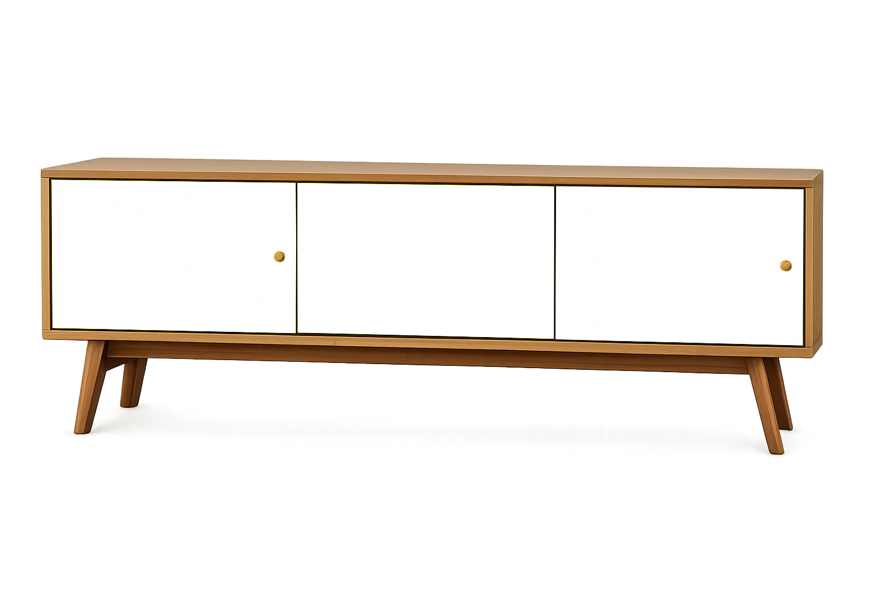

Diagnóstico
Aprendé a leer el estado de una pieza, reconocer materiales y detectar qué intervención necesita.
Cursos de restauración de muebles
Cursos presenciales para transformar muebles antiguos en piezas únicas, modernas y llenas de identidad.
Ver experiencia →
Manifiesto RAÍZ
Combinamos técnicas tradicionales de restauración con una mirada contemporánea sobre el color, la composición y el diseño.
Qué vas a aprender
Aprendé a leer el estado de una pieza, reconocer materiales y detectar qué intervención necesita.
Conocé técnicas básicas para reforzar, lijar, limpiar y preparar superficies.
Explorá paletas vibrantes y aprendé a elegir colores según estilo, espacio e identidad.
Aplicá una mirada actual para transformar un mueble antiguo en una pieza única.
Color Lab
Probá distintas combinaciones y descubrí cómo cambia la personalidad de una pieza.

Hacé click en un color para transformar la pieza
Transformaciones reales
En cada curso trabajamos sobre piezas reales para entender el proceso completo de restauración.
Ver cursos →Para quién es
No necesitás experiencia previa. Aprendés paso a paso desde la primera clase.
Ideal si querés crear piezas únicas con color, criterio visual y personalidad.
Convertí una habilidad manual y creativa en un proyecto propio.
Experiencia RAÍZ
Clases prácticas, grupos reducidos, materiales reales y acompañamiento en cada etapa del proceso.
Nuestros cursos
Inicial
Para empezar desde cero y aprender a leer una pieza antes de intervenirla.
Más elegido
El proceso completo: reparación, preparación, pintura, paleta y acabado final.
Avanzado
Para llevar tus piezas a un nivel más creativo y contemporáneo.
Testimonios
“Llegué sin saber por dónde empezar y terminé restaurando una mesa familiar. El curso me dio técnica, confianza y muchas ideas.”
— Martina, alumna RAÍZReservá tu lugar y empezá a darle nueva vida a tus piezas.